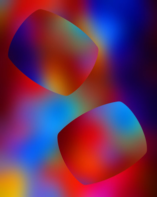
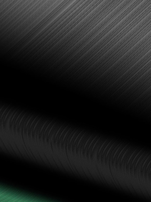

- Пусть расцветают все цветы,
- Пусть творят все поэты.
- Мао цзе Дун
- Пусть творят все поэты.
Сергей Адамович Лапша (г.р. 1954) принадлежит к тому поколению белорусских художников, которое совершило революцию в искусстве нашей республики, сравнимую с переворотом 1917 г. в России. После многих лет застоя в области искусства (о других областях здесь не говорим) на сцену жизни вышел новый стиль – модернизм: свободный, смелый, не идущий на поводу у государственной политики или вкусов широкой публики.
Художники этого стиля работали в разных направлениях: некоторые воспринимали западный сюрреализм, экспрессионизм, кубизм, фовизм… (конечно, с коррективами на индивидуальность каждого художника). Наиболее мыслящие и склонные к обобщениям выражали свои идеи средствами абстрактной живописи (притом геометрического направления).
В 1980-е годы в Беларуси активно функционировали объединения художников – авангардистов: «Квадрат» (Витебск), «Форма» (Минск), «4-63» (Полоцк), «Бло» (Минск), «Плюралис» и другие. Сергей Лапша входил в объединение «Форма», членами которого были также А.Белов, А.Забавчик, В.Мартынчик, В.Петров, Г.Хацкевич…
Сергей Лапша был наиболее ярким представителем нефигуративного направления в этом объединении. В отличие от многих других, он сохранил верность своей «первой любви» - абстрактной живописи – до настоящего времени. От начала самостоятельной деятельности и по сегодняшний день искусство Сергея Лапши постоянно развивается, обновляется, обогащается новыми идеями, мотивами, графическими приёмами (он работает в основном на компьютере). Иными словами, «фонтанирует» в лучшем смысле этого слова.
В данной статье рассматриваются некоторые (избранные) произведения Художника 2016 – 2017 гг. Автор данной статьи обращает внимание главным образом на степень связности двух категорий: содержания работы и её формальных признаков – композиции, колорита, техники исполнения. Критерием качества произведения служит связность (взаимодействие) всех его характеристик, включая название, данное автором.
Работы сгруппированы по темам, расположенным в алфавитном порядке.
№1 АСТРОНОМИЯ
1-1 "Осень" – образ сильного волнения; движение воздуха, ветер, разноцветье листьев и осенних цветов, изменчивость погоды – то остатки летнего тепла, то первые визиты холодных ветров, ночные заморозки.
Осень – переходное время – здесь бывает по-всякому. Но направление движения – слева направо – от лета к зиме, и это неотменимо.
1-2 "Март" – движение слева направо и вверх: это значит – от тьмы к свету, от холода к теплу. «Летят скворцы, бегут ручьи», небо по-весеннему голубое. Лёгкость, изящество, танец голубиных перьев, намёк на прорастание трав…
1-3 "Марс" – здесь небесное тело движется неизвестно откуда и непонятно куда, отбрасывая красную тень непонятно на что. Оно скользит по наклонной плоскости, каким-то чудом удерживаясь от провала в чёрную бесконечность космоса. Да, космические явления для нас всё ещё загадочны и непостижимы. На чём держится этот мир, куда он летит? Была ли когда-нибудь жизнь на Марсе, и есть ли она теперь?
Эти вопросы давно уже волнуют человечество: так хочется найти во Вселенной братьев по разуму! Писатели-фантасты в своё время увлекались этой темой (Герберт Уэллс). Хорошо бы, чтоб разум у наших «братьев» на других планетах оказался более совершенным, чем у нас. Поэма Н.Заболоцкого «Безумный волк» - это мечта о тех временах когда разумные существа на Земле всерьёз заинтересуются собратьями по разуму на других планетах.
1-4 "Парад планет" – как хорошо, когда небесные планеты образуют дружное общество, олицетворяя и материализуя благодатное число 5. Эта работа отмечена у меня как одна из самых выдающихся своей простотой в сочетании с выразительностью.
№2 Жилище
2-1 "Кровать" – Сергей Лапша знает толк в жизни; он не из тех, для кого «с милой рай в шалаше». Для себя и своей семьи он, не жалея трудов, свивает комфортабельное гнездо, чтобы семейная лодка не «разбилась о быт», как сказал Поэт. Другой инженер человеческих душ, не менее известный, утверждает, что основой семейного счастья является кровать (напомню: Ильф и Петров).
Сергей Лапша создаёт обаятельный образ кровати: это прямоугольник изящных пропорций, напоминающий лоскутное одеяло. Богаче всего узор в области подушки – в нём можно прочесть мысль Художника об основе семейного счастья: две головы, лежащие на подушке, различны по природе (полу), но едины по взглядам на жизнь, по вкусам и убеждениям. Это – идеал счастливого брака.
Что же касается остальной части кровати – здесь есть свои радости, но их значение сравнительно невелико.
2-2 "Одеяло". Художник предлагает также проект одеяла – тёплого, стёганого на вате, красивого, радующего глаз, уютного – и без всякой символики.
2-3 "Комната". Желательно, чтобы кровать помещалась в комнате – и не в какой-нибудь каморке, а в благоустроенной уютной спальне с нарядными коврами, весёлыми обоями, цветущими растениями в горшках… Такую комнату мы представляем себе по композиции "Комната".
2-4 "Стул". Этот предмет может служить рекламой выставки «Постулат-3», состоявшейся в г. Минске в 2016 г. Он, конечно, не вписывается в изящный «натурстиль» комнаты. Здесь он помещён «для шутки» (как сказал незабвенный Козьма Прутков).
2-5 "Вещи". Другие вещи, которые можно поместить в эту комнату, не будут диссонировать со стенами.
2-6 "Пламя". В наши времена электричество вытеснило живой огонь из быта людей; но в особых случаях домовладельцы позволяют себе роскошь устроить в гостиной (или кабинете) камин, или посидеть вечером при свечах.
- «На кресло у огня уселся гость устало,
- А пёс у ног его улёгся на ковёр…»
Предусмотрительный хозяин устроит в доме не только камин, но и дровяную печь – на случай, если водяное отопление откажет (по техническим причинам).
А как хорошо смотреть летней ночью на костёр, разведенный возле дома на специальной решётке у края газона со стриженой травой! Огонь и вода похожи между собой по благоприятному действию на нашу психику (если мы их наблюдаем на почтительном расстоянии).
Художник Сергей Лапша любит природные стихии – огонь и воду.
2-7 "Пасха". В хорошем доме обязательно нужно справлять праздники, особенно христианские. Пасха – радостный праздник Христова Воскресения, праздник весны и возрождения жизни, когда верующие, подобно Богу нашему Иисусу Христу, возрождаются духовно:
«Посему станем праздновать не со старою закваскою, не с закваскою порока и лукавства, но с опресноками чистоты и истины» [1-е Кор. 5:7,8].
Художник изобразил два яйца – непременные атрибуты пасхальных торжеств. Одно – большое и белое, другое – малое и красное. По-видимому, большое яйцо символизирует Вселенную, из которой возник наш мир – небо, земля и подземное царство (если верить древним мифам). Из этого яйца появился Бог-демиург, создавший всё необходимое для жизни людей и животных. Яйцо стало священным символом и магической вещью, оно обеспечивало благоденствие и процветание людей со всеми их промыслами – и потому превратилось в драгоценный подарок и талисман (особенно украшенное росписями, надписями, знаками и т.д.
Одна из легенд раннего христианства объясняет, почему цвет пасхальных яиц по преимуществу – красный.
«Мария Магдалина преподнесла римскому императору (Тиберию) яйцо с возгласом: Христос воскрес! Император возразил, что это так же невозможно, как белому стать красным. Тиберий не успел договорить, как яйцо стало превращаться из белого в ярко-красное. С тех пор на Пасху стали красить яйца».
Крашеные яйца – символ воскресения Иисуса, а с ним и очищения во имя новой, лучшей жизни.
Теперь в Комнате Художника есть всё, что нужно для счастья.
2-8 "Овощи". Чуть не забыли – для полного счастья здесь ещё нехватает «чего бы покушать». Художник предпочитает белорусское меню: овощи.
Он довольствуется пищей простой до аскетизма. Неважно, как она называется – главное, она произрастает на наших родных полях и огородах, она богата углеводами: об этом свидетельствует её пурпурный цвет.
Пожелаем Художнику и его поклонникам приятного аппетита!
№3 ИСКУССТВО
3-1 "Танец 1", 3-2 "Танец 2" - Весёлые столбики танцуют свои нехитрые танцы. Все они полосатые, разноцветные, немного неуклюжие, поскольку несгибаемые. Их танцы кажутся примитивными, но в них есть сюжет – и не такой уж весёлый, как может показаться с первого взгляда.
В «Танце 1» мы видим драму противостояния коллектива и одиночки (массы и вождя, работников и начальства). Три столбика сбились в кучку, а один прижал их своей силой (властью) так, что они пошевелиться не могут. Наклонный столбик кажется равным другим трём – но на самом деле он выше их ростом. Одним словом – ситуация «социальное неравенство».
В «Танце 2» разыгрывается драма одиночества, противопоставленная счастью дружбы (любви). Здесь четыре столбика образовали две дружеские пары, вполне довольные жизнью, в то время, как один из них скучает в стороне без партнёра. Это бытовая драма – и ничем тут не поможешь.
3-3 "Синий всадник". Так называлось общество художников-абстракционистов, в которое входил В.Кандинский. Как видим, собратья по искусству не забывают великих первопроходцев.
Что касается форм в работе "Синий всадник", то они также напоминают не очень далёкое прошлое: эти прямоугольники с дугообразными сторонами фигурировали в своё время на работах польского художника Г. Стажевского. Сергей Лапша осветил свою композицию разноцветными лучами – и получилась картина праздничной иллюминации – сплошная радость для очей.
В наше время цитирование чужих произведений – не грех, но художественный приём.
3-4 "Процесс". Работа несколько зловещая, мрачноватая, напоминает тюремную решётку и, по ассоциации, роман Франца Кафки с одноименным названием.
Шесть квадратов из 54-х светятся зловеще-ядовитыми цветами – красным, зелёным и голубым. Их присутствие здесь загадочно и необъяснимо. Почему здесь три цвета? И почему они сгрудились у левого края картины, нарушив её равновесие?
Вряд ли найдём ответ на эти вопросы – здесь ситуация не менее загадочна, чем в романе Ф. Кафки.
№4 Мистика.
"Fatum 1 и Fatum 2". Мистика – это всё таинственное, непредсказуемое, непознаваемое. Например – наша судьба (fatum). Появившись на свет, мы никакого представления не имеем – что ждёт нас в жизни. В дальнейшем, по мере роста и развития, наша судьба складывается так или иначе – она начинает осуществляться. Достигнув зрелости, мы уже видим прожитое воочию – судьба определилась и осуществилась.
В композиции Fatum 1 этот процесс визуализируется: клетчатая структура сверху донизу постепенно становится всё более чёткой, обретает контуры и всё более чистый цвет. Вместе с прекращением жизни судьба принимает окончательный образ – это ряд квадратов, окрашенных в цвета спектра солнечного света (белого), но не в естественном порядке, а вразброс – ведь в жизни есть всякое – и красное, и жёлтое…
Fatum 2. Во втором варианте аналогичной композиции та же мысль выражена иначе: осуществление судьбы происходит путём превращения тёмного и неясного в светлое и чёткое. По существу, эти варианты одинаковы. Заметим, что полной ясности и предсказуемости человеческой судьбы достичь в принципе невозможно: об этом свидетельствует случайное расположение цветов в рядах квадратов – и вертикальных, и горизонтальных. Нет ни одной пары одинаковых по цвету – справа, слева, сверху или снизу.
Композиции Fatum 1 и Fatum 2 – беспощадный приговор всем гадателям и предсказателям наших судеб.
4-3 "Мгновение". Высказанная выше мысль уточняется в композиции "Мгновение". Судьба человека зависит от суммы действий его в каждый момент жизни. Иной раз человек становится перед необходимостью выбора одного варианта действия из двух, и это трудно, даже мучительно (а иной раз смертельно, как в случае с Буридановым ослом).
Например: что лучше – пурпурное или красное поле в композиции "Мгновение"?
Эстетически они равноценны, оба могут служить определённым целям, или удовлетворять нашу потребность в цвете. В таких случаях людьми придуман хороший способ преодолеть нерешительность: поручить решение случаю – бросить жребий, погадать.
Здесь вступает в силу мистика. Мы передоверяем свою судьбу слепому случаю – богине Судьбы, изображаемой с повязкой на глазах.
Увы, человек слаб перед судьбой.
4-4 "Майя 1" и 4-5 "Майя 2".
Эти композиции, по существу, одинаковы, но в "Майя 2" разноцветные плоскости обведены тонкими рамками по цветному полю, а также красная и желтая плоскости на "Майя 1" заменены чёрными на "Майя 2", что заметно только при очень внимательном рассматривании. На этих композициях можно проводить эксперимент: проверку наблюдательности зрителя.
Задание: найти разницу между этими двумя картинками. Я нашла «одну большую разницу» и четыре малых. Более глубокого смысла обнаружить не удалось. Наверное, он слишком глубок для моего понимания.
4-6 "Вечное вращение". Изящная интерпретация фундаментального закона бытия. Современная физика микромира открыла тайну материи: мельчайшая её частица состоит из некоего центра (виртуального), вокруг которого вращается нано-частица со скоростью, превышающей скорость света (!!!). Такие «пары» составляют то, что мы называем материей. Вернее было бы назвать это «сгущённым движением».
Материя исчезла - это было объявлено ещё в начале ХХ века.
Легкие весёлые фигурки на композиции "Вечное вращение" визуализируют эту непредставимую для нас игру нано-частиц в космосе, образующую весь материальный мир. Хотя это относится к науке, но для нашего земного разума это – мистика, непредставимая тайна.
4-7 "Круг и квадрат". Мистичность этой работы заключается в её названии. Квадраты здесь действительно есть: один большой и в нём 16 малых, одинаковых по величине, но разных по цвету.
Обнаружить круга здесь не удалось. Даже мысль об этом не может возникнуть при виде этой аккуратно вычерченной композиции.
Одним словом: не верь глазам своим.
4-8 "Изгиб". Эта работа вполне утоляет нашу тоску по органическому, свободному, изящному и музыкальному, о чём мы несколько соскучились, рассматривая работу "Круг и квадрат". Здесь изображена «линия красоты» - синусоида, несколько скорректированная. Она танцует танец жизни, она поёт, как струна, мелодию небесной красоты (прошу прощения за «возвышенный слог»). Она – сама гармония.
А разве это не самая великая тайна природы и искусства, не самая высокая цель человечества – достичь гармонии в отношениях людей с природой и друг с другом?
№5 МУЗЫКА
5-1 "Осенняя рапсодия 1". Композиция напоминает клавиатуру музыкального инструмента и натянутые струны, способные издавать звуки различной частоты. Слева направо убывает толщина «струн» и повышается частота звуков – всё это создаёт динамизм композиции, не нарушая её строгости и математичности.
Если сыграть это на фортепиано – получится соната «Ритмы нашей жизни».
5-2 "Осенняя рапсодия 2". В этой композиции повторён приём сочетания чёрно-белых «струн» и красно-зелёной «клавиатуры». Она вызывает ассоциации скорее с гуслями, чем с фортепиано. На ней хорошо получится исполнение белорусской народной песни «Чаго ж мне не пець, чаго ж не гудзець?»…
№6 ОП-АРТ
6-1 "Состояние 1" (вогнутость)
6-2 "Состояние 2" (выпуклость)
Эти композиции – классический оп-арт компьютерного производства, продукт математического расчёта как формы, так и цвета. Построение цветовых рядов идеально. Подобно всякому произведению классического оп-арта, эти композиции внушают идеи закона, порядка, точного расчёта и «нездешней», не-органической красоты.
Глядя на эти работы, хорошо помечтать о жизни иной, где будет забыта старая песня:
- «Земля наша богата,
- Порядка в ней лишь нет»
- (А.К.Толстой)
6-3 "Лабиринт I" и 6-4 "Лабиринт II".
Эти композиции быстро утешают нас в любой печали. Здесь чёткая геометрическая форма дана в разнообразных сочетаниях, образующих затейливые лабиринты. Они освещены лучами всех цветов радуги. Само собой предполагается, что освещение это может варьироваться как угодно.
Получился весёлый аттракцион для праздничного гулянья. И хотя всё это размерено и просчитано – создаётся иллюзия свободы и непредсказуемости.
6-5 "Многоцветие". О том же говорит и композиция "Многоцветие". Здесь мы видим шесть полос спектральных цветов (в несколько изменённом порядке по сравнению с естественным), но это совсем не похоже на схему. Каждый цвет обогащается оттенками, и в результате композиция сочетает декоративность с закономерностью, и даже даёт место свободе самовыражения Художника.
6-6 "Перфорирование". Цвет – это явление поистине волшебное. Простая перфорированная плита может превратиться в роскошное зрелище, если её осветить лучами разных цветов, а отверстия заполнить разноцветными квадратиками (любым способом).
Недаром солнечная радуга – это знак Завета между Богом и людьми о том, что не будет более вода потопом на истребление всякой плоти [Быт.12:17].
6-7 "Зима". Композиция этих работ предельно проста, а цвет ещё проще: сочетание чисто-белого с приглушённо-белым. На квадратном поле расположились в строгом порядке 36 квадратов. Их цвет изменяется от белого до светло-серого; цвет поля – напротив: от светло-серого до белого.
Эти две работы как будто предназначены для гурманов, практикующих медитацию и читающих японскую поэзию… Для тех, кто желает отрешиться от мира суеты и погрузиться душой в чистое потустороннее бытие.
№7 Открытие
Эта работа – одна из самых красивых, и в то же время богатых по смыслу.
Наше эстетическое чувство получает глубокое удовлетворение от зрелища чёткого порядка, таинственной гармонии приглушённых спектральных цветов, классической нумерологии (5х5 прямоугольников фона, 5 ярких Т-образных фигур).
Казалось бы, приём Художника до наивности прост: метафора открытия (как подвига человеческого разума) здесь интерпретирована как простое открывание двух створок дверей (ворот). Заметим: острые формы светлых фигур невольно ассоциируются с остротой ума (учёного, изобретателя…), а светлые вертикальные столбики победно утверждаются над горизонталями основания – всё в целом напоминает обелиски – памятники гениям, которые совершили эти открытия.
№8 Природа
8-4 "Камыш". Пример того, как можно создать образ неисчислимого множества растений, используя две формы: черный стержень и белую дужку. Работа создаёт впечатление большого количества форм, но не утомляет зрение. Здесь сочетаются лаконизм приёма и многообразие ритмов: белые дужки на чёрных стеблях играют каждая свою мелодию, а в целом получается слаженный ансамбль.
8-5 "Кристалл". Большой красный куб – слишком искусственная фигура – это дело рук человека, а не произведение природы. Так же искусственна трава вокруг куба. Кто-то забросил эту красную глыбу в чуждую ему среду.
8-6 "Поля". Вид вспаханного поля настраивает человека на поэтический лад – так же, как все большие пространства – море, небо, горы…Недаром в песне воспето «Русское поле».
Композиция "Поля" относится к самым ритмичным и музыкальным.
Её хочется спеть хором, или сыграть на органе. Она внушает также и более глубокие мысли: о величии человеческого труда, покоряющего землю, и вместе с тем – о неумолимости земли, высасывающей из человека жизненную силу и дающей взамен малую толику светлой радости.
Ведь труд – не только радость, но и в какой-то мере – проклятье.
- «Но вот зловонными дворами
- Пошли к проклятью и труду» ( Ал. Блок)
Думаю, что эта работа С.Лапши – одна из самых впечатляющих.
"Начало"
8-4 "Начало". Так представляет себе Художник сотворение мира. Это подобно строительству каркасно-панельного сооружения – или плетению паутины с последующим заполнением её различными материалами.
У всякого начала бывает предначало, а у этого предначала – доначало – белый лист. Затем воздвигается каркас из стержней (столбов, раскосов, балок, перекладин, подпорок и т.д.). А затем остаётся заполнить этот каркас плоскими панелями различных цветов.
Творение вторгается агрессивным клином в первозданную девственную белизну, и если этот процесс не остановить – нечем будет дышать. Незабвенный Козьма Прутков сказал: «Если у тебя есть фонтан – заткни его. Дай отдохнуть и фонтану». Художник тактично остановил процесс созидания материи на полпути – иначе было бы нарушено космическое равновесие «пустого и полного». Аминь.
8-8 "Микроструктура". Углубившись в микроструктуру какой-либо вещи, мы теряем её из виду.
Все вещи одинаковы – это скопления микрочастиц. У них там в глубине материи весело: разноцветные шарики вертятся и трутся друг о дружку.
Наш неповоротливый разум пока ещё не освоился с законами нано-мира. Никогда не придётся нам заглянуть в этот мир непосредственно своими глазами. Спасибо – Художник дал нам об этом некоторое представление.
8-9 "Нефть". В этой композиции визуализируется процесс превращения живых растений в «жидкий минерал» - нефть. Работа отличается иллюстративностью и может служить учебным плакатом для школьников по предмету «Природоведение».
№9 РЕШЕТКИ
9-1 "Китай" – В этой композиции выражена идея стандартизации людей (так, как мы её понимаем): китайский народ – это сплошная безликая масса. Человек лишен индивидуальности. Люди – это одинаковые роботы.
Такая точка зрения была сформулирована ещё в сказке Андерсена:
"Китай, как известно, очень большая страна, и все люди в ней – китайцы». Удивительно, не правда ли?"9-2 "Изменение". Истый европеец постарался бы покрасить одинаковые решётки по-разному – только с одной целью: избежать однообразия и стандартизации. Таковы уж мы по природе.
9-3 "Каземат". Это может присниться в страшном сне. Это – тюрьма народов, плод настойчивой политики унификации и «уравниловки», проводимой в некоторых странах (в основном – восточных).
Заходящее солнце бросает на тюрьму последние блики света – но для её обитателей свет уже давно погас.
— А может быть, это не здание, а сплошной массив – колоссальный памятник тирании и угнетения народа?
— Тогда он должен быть выставлен в людных местах для предостережения народа от потери политической бдительности.
9-4 "День грядущий". Художник Сергей Лапша по натуре – оптимист. Он избегает мрачных пророчеств (по возможности). На этой работе он желает внушить зрителю уверенность в том, что жизнь станет лучше и веселее.
- «Живём мы весело сегодня,
- А завтра будет веселей» (Из песни советских времён).
В композиции "День грядущий 2" время движется снизу вверх. Соответственно цвет кружков изменяется от красного через оранжевый и жёлтый к белому.
Вместе с тем размеры фигурок увеличиваются, и в конце концов они соединяются в две сияющие полосы. Как говорил наш вождь Н.С.Хрущёв: «Мы идём к сияющим вершинам коммунизма!»
Как говорится: посмотрим – увидим.
№10 ПУРИЗМ
10-1 "Весна І". 10-2 "Весна ІІ", 10-3 "Весна ІІІ", 10-4 "Зелёный штиль" – Эти композиции можно отнести к классическому стилю «пуризм». Временами Художник чувствует потребность отдохнуть от многообразия форм этого мира, от усилий формотворчества… Хочется упростить композицию до минимума, но при этом не потерять эстетическое качество. Для этого пригоден спектр основных цветов: демонстрация его в чистом виде способна создать статус произведения искусства стиля «пуризм» (от слова «чистый» «pure»).
Компьютерная техника блестяще справляется с подобными задачами.
10-5 "День грядущий 1" – фактически, это повторение композиции «День грядущий 2» с добавлением контуров ко всем «лампочкам».
Мораль сей басни – та же, что и в композиции "День грядущий 2" – надежда на счастье в будущем, которого чуть-чуть не хватает в настоящем.
№11 ЭКЗОТИКА
11-1 "Норвегия" – таинственная загадочная страна туманов, снегов и льдов, где Эдвард Григ создал бессмертную музыку сюиты на тему поэмы Ибсена «Пер Гюнт», где Сольвейг прибегает на лыжах и поёт чудесную песню вечной любви… Где Олдос Хаксли воспел народ простых рыбаков и смелую девушку Салку Валку, которая питалась почти исключительно рыбой, только что вытащенной из моря
Чтобы описать работу С.Лапши «Норвегия» - я не найду слов.
При виде её в моей душе начинает звучать музыка Грига и шум штормового прибоя, крики чаек и вторая часть концерта Грига для фортепиано с оркестром (в исполнении Святослава Рихтера).
Я бы отдала этой работе Сергея Лапши первое место во всём собрании его работ. Как точно он нашёл пропорции, краски и фактуры для выражения сути поэзии этой северной страны, её таинственного очарования и неповторимой экзотики! Здесь сочетаются чёткое и туманное, солнечное и ледяное, закон и воля…
Поистине, здесь Художник играет на компьютере, как на органе.
- «Кто-то прошёл здесь вчера…
- О, почему не заметил
- Хижины бедной моей!»
- (из японской поэзии)
- О, почему не заметил
11-2 "Япония". Что-то есть в этой композиции истинно-японское: сочетание белого с зелёным, аритмия в расположении зелёных пятен – подобно свободному ритму японской поэзии, не желающей сковывать себя каноничными размерами и рифмами. Одиночество и маргинальность пурпурного пятнышка внизу картины, готового вот-вот исчезнуть, не оставив следов…
Зелёные пятна у верхней рамы похожи на следы неуверенной походки человека по свежевыпавшему снегу: он не идёт, а пробирается, нащупывая ногами каждый шаг.
Трудный жизненный путь и одиночество – вот судьба человека.
P.S.
Дом
Что может рассказать о доме эта цветистая эффектная работа?
Этому дому недолго существовать: хоть он и новый, но готов вот-вот рассыпаться. В нём нет общей связующей идеи (силы). Каждый этаж живёт своей жизнью и не желает гармонировать с другими. Отношения между «соседями» нельзя назвать позитивными: они или откровенно враждебны, или тайно-недоброжелательны, или «безвкусны», то есть негармоничны в классическом понимании этого слова.
Перенумеруем цветные полосы от нижней до верхней (от 1 до 8) и рассмотрим попарные сочетания их цветов.
1-2 – жёлтый-зелёный – «яичница с луком», «низкий штиль», бесхарактерное сочетание (по И.В.Гете). Не-гармонично, грубовато.
2-3 – жёлтый-голубой – сентиментально, простонародно; если бы голубой был спектральной яркости (типа берлинской лазури) – это было бы хорошо, но здесь он сильно разбелен, что нарушает гармонию.
3-4 – дисгармонично по той же причине, что и 2-3. Разбеленному среди насыщенных быть не положено.
4-5 – пурпурный-красный – недопустимый диссонанс двух насыщенных цветов, соседних в круге (согласно классической теории гармонии).
5-6 – красный-синий – вот, наконец, гармоничное сочетание, применяемое в геральдике, всем понятное. По закону диалектики – крайности сходятся.
6-7 – синий-белый – это сочетание позитивно в силу своей естественности: небо и облака, море и парус, небо и снежное поле; оно прохладно, но не замораживает.
7-8 – два светло-серых - слишком тонкий нюанс между ними. Чувствуется затаённая вражда, соперничество, скрытность, неискренность между людьми или вещами.
Весь этот «парад этажей» фигурирует на тёмно-зелёном фоне, слегка сдвинутом с вертикальной оси. Недолго этому дому простоять – он уже начал разрушаться.
Игрушки
Если это игрушки – то не для детей.
Центральное место в композиции занимает большой чёрный квадрат на белом фоне – увы, вплоть до наших дней эта фигура не перестаёт волновать карикатуристов и фельетонистов, а может быть, они не успокоятся и во все последующие века.
В композиции Сергея Лапши этот квадрат прикрыт тремя цветными фигурами, но что значит их балалаечный хор по сравнению с мощным гудением чёрных басов органа? Наивная простота красно-жёлто-голубого немного усложняется серьёзностью чёрно-белого и глубокомыслием пурпурного – хотя и в малом количестве, но весьма значимом.
Камнепад
Об этой работе хочется писать стихами. Здесь выявлены главные числа, о которых сказал Поэт: «Пастухи моей мысли» (В.Хлебников).
Здесь есть один, и два, и три!
Подумайте – как это важно! Ведь вы – один, но с вами друг, или подруга, а может быть – ваш верный пёс… И вы – не одиноки.
И Бог у вас един в трёх лицах – Отец, и Сын, и Дух Святой!
Ещё четыре камня рядом встали –
Они четыре времени в году обозначают.
Четыре в комнате угла, четыре ножки у стола, а также и у кошки – всего четыре ножки (pardon, вспомнила детство). Четыре – число миростроительное. Мы различаем 4 стороны света, а в нашей собственной фигуре – 4 фасада: передний, задний и два боковых.
Сумма 3+4 равна 7. Семь – также число магическое, библейское. Им исчисляется множество важнейших событий: дни вселенского потопа, годы изобилия и голода, число дней поста и пиров, праздников и жертвоприношений, целебных омовений, столбов в храме, братьев в семье, трубящих ангелов, чаш гнева Божия, изливаемых на землю… Всего в Книгах Ветхого и Нового Завета насчитывается почти 2750 упоминаний числа семь в различных контекстах. Достойно всяческого одобрения то, что современный художник напомнил нам старинную и вечно актуальную науку о числах.
Окно

Окно – это слово, родственное слову «око». Это отверстие в стене, сквозь которое можно видеть наружный мир – небо, землю и прочее.
Через это окно мы не увидим ничего. Здесь виден только большой чёрный крест, заслоняющий вид. О чём он говорит? Может быть, он пророчит близкий конец жизни на Земле? Или крушение ваших надежд? Или разочарование в чём-то важном для вас?
Долго созерцать эту работу не рекомендуется.
Подушка
Эта вещь может служить тестом для испытания фантазии и эрудиции зрителя. Ответьте на вопросы:
- Сколько слоёв в этой подушке? Три или четыре?
- Почему не два и не пять (или даже один?)
- Почему подушка летает в воздухе вместо того, чтобы лежать на стуле?
- Что опускается на неё сверху? Юбка, брюки, или ещё одна подушка?
Бывают в жизни вопросы, на которые не существует ответа.
Лес и вода
Простите, но я не вижу здесь ни леса, ни воды. Здесь только 8 стержней и 8 спектральных цветов, расположенных в «физическом» порядке. Всё это из области оптики и компьютерной графики.
В этой работе есть некоторая музыкальность – поскольку цветовой ряд соответствует звуковому (октаве), но сам по себе хроматический звукоряд – ещё не музыка.
Три вселенских короля
Потрясающе! Эта композиция, должно быть, стоила многих ночей и дней мучительных раздумий, многих листов испорченной бумаги для эскизов и килобайт затраченной энергии... Зато уж получилось на пределе гениальности: ясно, чётко, кругло и квадратно, а сверх того - жёлто-сине-красно. Но лучше всего удалось белое. А сколько смысла, колорита, магии чисел! Это новая сказка о трёх королях - почти, как у Андерсена. Впрочем, если убрать "королей" - получится "Белый квадрат на чёрном фоне" - тот же Малевич, но наоборот! Поздравляю Сергея Адамовича с новым успехом.
Заключение: желаем Сергею Адамовичу новых творческих успехов! Л.М.
Л. Миронова,
11.2017